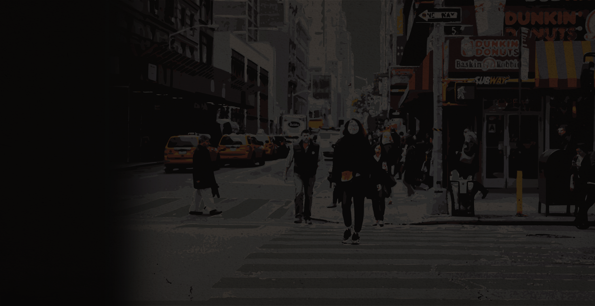
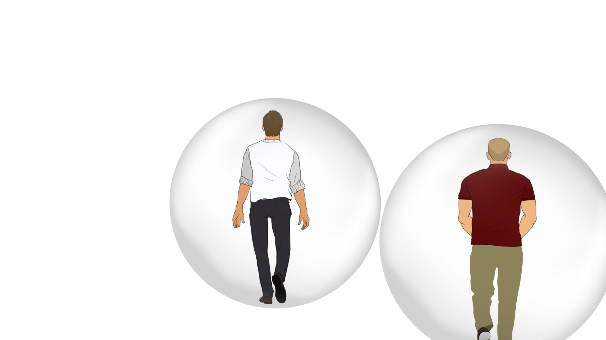

미국에 사는 존과 마이클

존은 트럼프의 당선 사실을 믿을 수 없습니다.
‘아니 도대체 누가 트럼프를 뽑은거야…?’

하지만 마이클의 생각은 다릅니다.
“역시. 트럼프가 될 줄 알았어!”


우리가 살고 있는
우리가 살고 있는
반쪽짜리 세상.
존과 마이클은 아침에 일어나 페이스북으로 뉴스를 봅니다.
뉴스피드에는 이런 소식이 올라오는군요.
페이스북은 사용자의 취향을 파악해
그들이 좋아할것 같은 뉴스만 골라 보여줍니다.
'개인화 알고리즘' 덕분입니다.
페이스북만이 아닙니다.
애플 뮤직은 추천 음악을, 유튜브는 추천 영상을 띄워주죠.
'개인화 알고리즘'은 이미 우리 일상 깊숙이 들어와 있습니다.
존과 마이클이 각자 친구들과 점심을 먹으러 나왔네요.
‘개인화 알고리즘’이 이들을 비슷한 부류로 분류한다면,
친구들끼리 비슷한 뉴스를 받아보고 있을 확률이 높습니다.
이들은 '다른 세상'에 살고 있습니다.
그런데 잠깐. 이들은 정말 다른 세상에 살고 있을까요?
이런, 같은 아파트에 살고 있었군요.
둘은 종종 같은 버스를 타기도 합니다.

자주 가는 식당도 비슷하네요.
존과 마이클은 일과를 마치고 각자 집으로 향합니다.